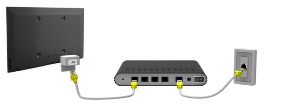

4 de 5 estrella
Conexiones por cable Las conexiones por cable deben ir desde el firewall del centro de reuniones (normalmente a través de un conmutador de red) hasta un panel de conexiones y luego a los conectores de las paredes. Entonces, los dispositivos se conectan a los conectores de las paredes con otro cable de conexión de red. Las conexiones por cable suelen ser más fiables que las inalámbricas y deben utilizarse en las dos situaciones siguientes siempre que sea posible: Cuando se conectan dispositivos que van a estar siempre en la misma ubicación (como la computadora de un secretario o de un centro de historia familiar). En lugares donde los dispositivos deban conectarse a aplicaciones con elevado ancho de banda (como una difusión por web, una videoconferencia personal o una transmisión de video). Algunas áreas clave de los centros de reuniones donde podrían ser necesarias soluciones de red por cable son: Las oficinas de los secretarios El salón del sumo consejo El púlpito de la capill La pared lateral tras el último banco de la capilla El salón cultural El salón de la Sociedad de Socorro El centro de materiales (la biblioteca del centro de reuniones) Cerca de los armarios de los equipos satelitales y de audio El centro de historia familiar, el centro de recursos de empleo u otras oficinas situadas en los centros de reuniones
